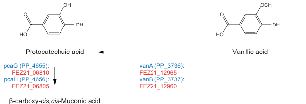

VanA (PP_3736) is the Rieske oxygenase subunit of the two-component VanAB vanillate O-demethylase in Pseudomonas putida KT2440. The protein carries an N-terminal Rieske [2Fe-2S] cluster-binding domain and a C-terminal VanA_C catalytic domain characteristic of aromatic-ring-hydroxylating oxygenase alpha subunits. The core function is oxygen-dependent oxidative O-demethylation of vanillate during lignin-derived aromatic catabolism; overexpression studies also show activity toward syringate, but vanillate O-demethylation remains the most specific native assignment for this gene.
| GO Term | Evidence | Action | Reason |
|---|---|---|---|
|
GO:0003824
catalytic activity
|
IEA
GO_REF:0000117 |
MARK AS OVER ANNOTATED |
Summary: VanA is certainly catalytic, but this term is far too broad to be informative. The same annotation set already contains the specific child term vanillate monooxygenase activity, which captures the actual biochemical role.
Reason: GO:0003824 is a generic parent of the more specific enzyme activity already present. Retaining the parent term adds little value once GO:0018489 is accepted.
|
|
GO:0005506
iron ion binding
|
IEA
GO_REF:0000002 |
MARK AS OVER ANNOTATED |
Summary: VanA is a Rieske oxygenase subunit with a [2Fe-2S] cluster. The general iron ion binding annotation reflects that cofactor requirement, but the specific cluster-binding term is already present and is more informative.
Reason: GO:0005506 is true in a broad sense, but GO:0051537 precisely captures the relevant cofactor-binding chemistry for this protein and should be preferred.
|
|
GO:0016491
oxidoreductase activity
|
IEA
GO_REF:0000002 |
MARK AS OVER ANNOTATED |
Summary: VanA is an oxidoreductase, but this parent term is less informative than the specific vanillate monooxygenase activity annotation supported by the UniProt EC assignment and the KT2440 vanAB literature.
Reason: The annotation is redundant with GO:0018489, which states the actual substrate and reaction class.
|
|
GO:0018489
vanillate monooxygenase activity
|
IEA
GO_REF:0000003 |
ACCEPT |
Summary: This is the core molecular function of VanA. UniProt assigns EC 1.14.13.82 to Q88GI6, recent KT2440 studies describe VanAB as the native Rieske non-heme iron monooxygenase used for vanillate O-demethylation, and vanAB engineering changes vanillate utilization in vivo.
Reason: GO:0018489 is the most specific and biologically appropriate molecular function for vanA in KT2440. Falcon deep research confirms VanA is the terminal oxygenase of the two-component VanAB vanillate O-demethylase that converts vanillate to protocatechuate with release of formaldehyde.
Supporting Evidence:
file:PSEPK/vanA/vanA-uniprot.txt
DE SubName: Full=Vanillate O-demethylase oxygenase subunit
file:PSEPK/vanA/vanA-uniprot.txt
DE EC=1.14.13.82
file:PSEPK/vanA/vanA-deep-research-falcon.md
the two-component **VanAB** vanillate O-demethylase system that catalyzes oxidative demethylation of vanillate to protocatechuate, releasing **formaldehyde** as a coproduct
file:PSEPK/vanA/vanA-deep-research-falcon.md
VanA (Q88GI6; PP_3736)** is the **terminal oxygenase** subunit responsible for substrate hydroxylation/oxidative demethylation chemistry
|
|
GO:0051537
2 iron, 2 sulfur cluster binding
|
IEA
GO_REF:0000002 |
ACCEPT |
Summary: VanA contains the canonical Rieske [2Fe-2S] domain and this cofactor is a defining feature of the oxygenase subunit. The annotation is specific and consistent with both the UniProt domain architecture and the literature description of VanAB as a Rieske monooxygenase.
Reason: This is a specific, mechanistically relevant molecular function that explains how the oxygenase subunit supports catalytic turnover.
Supporting Evidence:
file:PSEPK/vanA/vanA-uniprot.txt
DR GO; GO:0051537; F:2 iron, 2 sulfur cluster binding; IEA:UniProtKB-KW.
file:PSEPK/vanA/vanA-uniprot.txt
FT DOMAIN 7..107
file:PSEPK/vanA/vanA-deep-research-falcon.md
the oxygenase (VanA-family) contains a **Rieske [2Fe–2S] cluster** and a **non-heme iron** catalytic center
file:PSEPK/vanA/vanA-deep-research-falcon.md
VanAB belongs to the **Rieske non-heme iron monooxygenase**
|
|
GO:0046191
aerobic phenol-containing compound catabolic process
|
IMP
PMID:31809239 Biotransformation of corn bran derived ferulic acid to vanil... |
NEW |
Summary: Proposed new annotation. VanA participates in aerobic breakdown of methoxylated phenolic lignin-derived aromatics, most clearly vanillate. vanAB disruption blocks vanillic acid metabolism in KT2440, and recent KT2440 studies use native VanAB as the key O-demethylation step for vanillate and related substrates.
Reason: The current GOA set lacks a biological process term capturing VanA's role in aerobic aromatic catabolism. GO:0046191 is broad but appropriate for the native vanillate/syringate O-demethylation context.
Supporting Evidence:
file:PSEPK/vanA/vanA-notes.md
a vanAB nonfunctional mutant was explicitly selected because it was defective in vanillic acid metabolism
file:PSEPK/vanA/vanA-deep-research-falcon.md
VanAB enables growth on vanillate as a sole carbon/energy source by converting it to protocatechuate
file:PSEPK/vanA/vanA-deep-research-falcon.md
VanA operates in the **upper funneling pathway for lignin-derived guaiacyl aromatics**
|
Q: Is syringate oxidation by native KT2440 VanAB physiologically relevant at endogenous vanAB expression levels, or mainly an overexpression phenotype?
Q: Which native transcription factors, in addition to carbon catabolite repression, dominate vanAB induction during growth on vanillate in KT2440?
Q: Does vanA contribute measurably to substrate hierarchy when KT2440 is exposed to mixed lignin-derived aromatics?
Experiment: Construct clean vanA and vanB deletion/complementation strains and compare growth plus substrate disappearance on vanillate, vanillin-derived vanillate, and syringate under identical aerobic conditions.
Hypothesis: VanA is essential for native vanillate O-demethylation and any measurable syringate O-demethylation in KT2440.
Type: growth phenotype and substrate consumption assay
Experiment: Purify the VanAB complex and measure oxygen consumption plus product formation with vanillate, syringate, and additional methoxylated aromatics.
Hypothesis: VanA has highest catalytic efficiency on vanillate but retains measurable side activity on selected lignin-derived methoxylated phenolics.
Type: biochemical enzyme assay
Experiment: Perform RNA-seq or targeted promoter-reporter assays during growth on vanillate versus mixed aromatic substrates, with and without crc perturbation.
Hypothesis: vanAB expression is strongly substrate-responsive and further tuned by catabolite repression during mixed-substrate growth.
Type: transcriptional regulation analysis
This report is retrieval-only and is generated directly from Asta results.
search_papers_by_relevance with snippet_search.The research report should be a detailed narrative explaining the function, biological processes, and localization of the gene product. Citations should be given for all claims.
You should prioritize authoritative reviews and primary scientific literature when conducting research. You can supplement
this with annotations you find in gene/protein databases, but these can be outdated or inaccurate.
We are specifically interested in the primary function of the gene - for enzymes, what reaction is catalyzed, and what is the substrate specificity? For transporters, what is the substrate? For structural proteins or adapters, what is the broader structural role? For signaling molecules, what is the role in the pathway.
We are interested in where in or outside the cell the gene product carries out its function.
We are also interested in the signaling or biochemical pathways in which the gene functions. We are less interested in broad pleiotropic effects, except where these elucidate the precise role.
Include evidence where possible. We are interested in both experimental evidence as well as inference from structure, evolution, or bioinformatic analysis. Precise studies should be prioritized over high-throughput, where available.
The gene symbol vanA is ambiguous across taxa, but for this request the target is unambiguous: UniProt Q88GI6 = Vanillate O-demethylase oxygenase subunit (VanA), EC 1.14.13.82, encoded by vanA / PP_3736 in Pseudomonas putida strain KT2440; its partner reductase is vanB / PP_3737 in the same pathway step (garciahidalgo2020vanillinproductionin pages 10-11, bleem2024evolutionandengineering pages 2-3). A pathway diagram explicitly places vanA/vanB at the vanillate (vanillic acid) → protocatechuate (protocatechuic acid) conversion in KT2440 aromatic metabolism (garciahidalgo2020vanillinproductionin media cf4cdebe).
VanAB is a bacterial aromatic O-demethylation system that converts the lignin-derived methoxylated aromatic acid vanillate into protocatechuate (PCA) while releasing formaldehyde as a one-carbon byproduct (bleem2024evolutionandengineering pages 2-3, hibi2005functionalcouplingbetween pages 1-2). This reaction is a key “funneling” step, transforming a substituted lignin monomer into a central intermediate that can be metabolized by core aromatic ring-cleavage pathways (garciahidalgo2020vanillinproductionin media cf4cdebe, bleem2024evolutionandengineering pages 2-3).
VanAB is a two-component enzyme system in which:
- VanA (Q88GI6; PP_3736) is the terminal oxygenase subunit responsible for substrate hydroxylation/oxidative demethylation chemistry (hibi2005functionalcouplingbetween pages 1-2, bleem2024evolutionandengineering pages 2-3).
- VanB (PP_3737) is the reductase component that supplies electrons from NAD(P)H to VanA (hibi2005functionalcouplingbetween pages 1-2, donoso2022identificationofa pages 1-2).
VanAB belongs to the Rieske non-heme iron monooxygenase (Rieske oxygenase) family (bleem2024evolutionandengineering pages 2-3, bleem2024evolutionandengineering pages 1-2). In this class, the oxygenase (VanA-family) contains a Rieske [2Fe–2S] cluster and a non-heme iron catalytic center; activity depends on electron transfer from the reductase and cellular reductants (tuomela2025conversionandupgrading pages 15-17, donoso2022identificationofa pages 1-2).
The consensus reaction supported by multiple sources is:
- Vanillate → protocatechuate + formaldehyde (oxygen- and reducing equivalent–dependent) (bleem2024evolutionandengineering pages 2-3, hibi2005functionalcouplingbetween pages 2-4, hibi2005functionalcouplingbetween pages 1-2).
This step is explicitly shown in a KT2440 pathway diagram and is assigned to vanA (PP_3736) / vanB (PP_3737) (garciahidalgo2020vanillinproductionin media cf4cdebe).
Functional assays of Pseudomonas VanAB expressed in E. coli showed that both NADH and NADPH can serve as electron donors in vitro for protocatechuate formation (hibi2005functionalcouplingbetween pages 2-4). In vivo experiments manipulating pentose phosphate pathway NADPH supply suggested NADPH may be preferred in vivo under the tested conditions (hibi2005functionalcouplingbetween pages 4-5). However, systems-level modeling of P. putida KT2440 lignin-carbon metabolism treated vanillate O-demethylation as using NADH based on a stated preference of VanB for NADH (zhou2025quantitativedecodingof pages 11-12). Taken together, available evidence indicates that cofactor usage can be context-dependent, and may vary with organism/assay format and redox state (hibi2005functionalcouplingbetween pages 2-4, hibi2005functionalcouplingbetween pages 4-5, zhou2025quantitativedecodingof pages 11-12).
VanAB systems are best supported as acting on meta-methoxylated aromatic acids with a carboxyl group, and substrate recognition rules inferred from comparative work emphasize these features (donoso2022identificationofa pages 1-2, donoso2022identificationofa pages 4-5). Although vanillate is the dominant physiological substrate in KT2440 (bleem2024evolutionandengineering pages 2-3, garciahidalgo2020vanillinproductionin media cf4cdebe), related literature notes broader activity of VanAB homologs on other methoxylated aromatics (e.g., veratrate, syringate, 3-O-methylgallate), with substrate preferences that can differ between organisms and between in vivo vs in vitro contexts (tuomela2025conversionandupgrading pages 15-17, wolf2024thecatabolismof pages 9-14).
In KT2440, VanA/VANAB converts vanillate to protocatechuate, a central intermediate that enters broader aromatic degradation routes (commonly the β-ketoadipate/protocatechuate branches) (garciahidalgo2020vanillinproductionin media cf4cdebe, bleem2024evolutionandengineering pages 2-3). This makes VanA a key node in microbial utilization of lignin-derived guaiacyl aromatics (bleem2024evolutionandengineering pages 2-3).
A central constraint of VanAB physiology is that O-demethylation generates formaldehyde, which is toxic and must be detoxified/assimilated (bleem2024evolutionandengineering pages 2-3, hibi2005functionalcouplingbetween pages 1-2). In E. coli expressing vanAB, formate accumulation began concomitantly with protocatechuate production, consistent with conversion of formaldehyde to formate via detoxification pathways (hibi2005functionalcouplingbetween pages 4-5). Disruption of frmA (formaldehyde dehydrogenase) markedly reduced formate accumulation and impaired growth and protocatechuate production, demonstrating functional coupling between VanAB activity and formaldehyde detoxification capacity (hibi2005functionalcouplingbetween pages 4-5).
In KT2440, vanA and vanB are organized as a vanAB operon, which has been deleted or reintroduced/overexpressed in multiple engineering studies (bleem2024evolutionandengineering pages 2-3, hibi2005functionalcouplingbetween pages 1-2).
Comparative evidence indicates vanAB expression can be controlled by a negative regulator termed VanR, with vanillate acting as an inducing/effector molecule that relieves repression (tuomela2025conversionandupgrading pages 15-17). In adaptive evolution experiments centered on vanillate utilization in KT2440, mutations in regulators and formaldehyde handling pathways were repeatedly selected alongside VanAB overexpression, consistent with regulation and detoxification as major constraints on growth with vanillate (bleem2024evolutionandengineering pages 5-7, bleem2024evolutionandengineering pages 1-2).
No direct experimental localization (e.g., fractionation, microscopy tagging) for KT2440 VanA was found in the retrieved sources. The available evidence supports VanA as an intracellular aromatic-catabolic enzyme (Rieske oxygenases are typically cytosolic), but this should be treated as an inference rather than a directly demonstrated localization in KT2440 (bleem2024evolutionandengineering pages 2-3, donoso2022identificationofa pages 1-2).
Bleem et al. (2024-07; Metabolic Engineering) directly interrogated and optimized aromatic O-demethylation in KT2440, comparing the native VanAB mechanism to a heterologous tetrahydrofolate-dependent demethylase (LigM) (https://doi.org/10.1016/j.ymben.2024.06.009) (bleem2024evolutionandengineering pages 1-2). Key findings relevant to functional annotation of VanA include:
- VanAB is the native vanillate O-demethylation route producing protocatechuate and formaldehyde (bleem2024evolutionandengineering pages 2-3).
- Adaptive laboratory evolution and targeted mutations improved performance; evolved VanAB strains showed ~1.8× faster growth than LigM strains, and combining key mutations yielded ~5× faster vanillate consumption in the first 8 hours than wild type (bleem2024evolutionandengineering pages 1-2).
- Mutations were enriched in formaldehyde detoxification genes (e.g., fghA and related loci) and in regulatory loci, highlighting that successful VanA-driven metabolism requires coordinated management of formaldehyde stress and redox/flux (bleem2024evolutionandengineering pages 5-7, bleem2024evolutionandengineering pages 1-2).
Werner et al. (2023-09; Science Advances) engineered P. putida KT2440 for biological funneling of mixed lignin-related aromatics to β-ketoadipic acid and report tuning enzymes for O-demethylation (including vanillate O-demethylation), hydroxylation, and ring-opening steps (https://doi.org/10.1126/sciadv.adj0053) (werner2023ligninconversionto pages 1-2). Reported bioprocess metrics demonstrate real-world relevance of VanA-adjacent steps:
- β-ketoadipate titers: 44.5 g/L (model aromatics), 25 g/L (corn stover–derived LRCs)
- Productivities: 1.15 and 0.66 g·L⁻¹·h⁻¹
- Yield: 0.10 g product per g corn stover–derived lignin (and 1.0 mol/mol on model substrates)
- Technoeconomic estimate: minimum selling price $2.01/kg (werner2023ligninconversionto pages 1-2).
These data position VanA-dependent funneling (via protocatechuate formation from vanillate) as part of a quantitatively validated pathway toward industrially relevant aromatic bioproducts (werner2023ligninconversionto pages 1-2).
VanA’s primary value in KT2440 is as a gateway enzyme enabling assimilation of vanillate and related lignin-derived aromatics by converting them into protocatechuate for downstream ring cleavage and conversion into commodity/product precursors (bleem2024evolutionandengineering pages 2-3, werner2023ligninconversionto pages 1-2).
Two recurring engineering strategies illustrate VanA’s practical role:
1. Overexpress/optimize vanAB to accelerate funneling and reduce accumulation of upstream aromatics, but then manage formaldehyde toxicity and redox demands (bleem2024evolutionandengineering pages 1-2, bleem2024evolutionandengineering pages 5-7).
2. Delete vanAB when the desired product is upstream of vanillate assimilation (e.g., to prevent consumption of vanillate/vanillin-derived intermediates in strains designed to accumulate aromatic aldehydes/derivatives) (bleem2024evolutionandengineering pages 2-3).
When vanAB from Pseudomonas putida was expressed in E. coli, whole-cell extract assays produced 15.5 ± 2.2 mM protocatechuate after 3 h, with a reported specific activity 0.88 μmol·min⁻¹·g⁻¹ (whole-cell extract basis), and activity supported by NADH or NADPH (hibi2005functionalcouplingbetween pages 2-4). In vivo, formate accumulation reached roughly half of protocatechuate accumulation, consistent with partial conversion of released formaldehyde to formate (hibi2005functionalcouplingbetween pages 4-5).
A quantitative metabolism study of KT2440 reported a vanillate uptake rate of 8.2 mmol·gCDW⁻¹·h⁻¹ under a standardized condition of 100 mM carbon equivalent substrate loading (zhou2025quantitativedecodingof pages 11-12). The same work modeled vanillate O-demethylation with NADH usage based on a stated NADH preference of VanB (zhou2025quantitativedecodingof pages 11-12).
Engineered KT2440 conversion of lignin-derived aromatic mixtures to β-ketoadipate achieved industrially relevant metrics (titers/productivities/yields and technoeconomic estimate), in which O-demethylation steps including vanillate O-demethylation were among targeted pathway nodes (werner2023ligninconversionto pages 1-2).
The following figure region shows the vanillate → protocatechuate step annotated with vanA (PP_3736) / vanB (PP_3737) in P. putida KT2440 (garciahidalgo2020vanillinproductionin media cf4cdebe, garciahidalgo2020vanillinproductionin media 14e8286d).
| Feature | Summary for Pseudomonas putida KT2440 VanA (UniProt Q88GI6; gene vanA; locus PP_3736) | Supporting citation(s) |
|---|---|---|
| Identity verification | The target is VanA/PP_3736 from P. putida KT2440, annotated as the oxygenase component of vanillate O-demethylase; the partner gene is vanB/PP_3737. A pathway figure for KT2440 explicitly places vanA/vanB at the vanillate (vanillic acid) → protocatechuate (protocatechuic acid) step. | (garciahidalgo2020vanillinproductionin pages 10-11, garciahidalgo2020vanillinproductionin pages 8-9, garciahidalgo2020vanillinproductionin media cf4cdebe) |
| Primary biochemical function | VanA is the terminal oxygenase of the two-component VanAB vanillate O-demethylase system that catalyzes oxidative demethylation of vanillate to protocatechuate, releasing formaldehyde as a coproduct. | (hibi2005functionalcouplingbetween pages 1-2, bleem2024evolutionandengineering pages 2-3) |
| Enzyme class / mechanism | VanAB is described as a Rieske non-heme iron monooxygenase / Rieske-type aromatic O-demethylase. The chemistry is an oxidative O-demethylation rather than a THF-dependent methyl-transfer route. | (bleem2024evolutionandengineering pages 2-3, donoso2022identificationofa pages 1-2, bleem2024evolutionandengineering pages 1-2) |
| Reaction | Canonical reaction in KT2440: vanillate + reducing equivalents + O2 → protocatechuate + formaldehyde (exact stoichiometric balancing varies by assay framing, but all cited sources agree on vanillate-to-protocatechuate conversion with formaldehyde release). | (bleem2024evolutionandengineering pages 2-3, hibi2005functionalcouplingbetween pages 2-4, hibi2005functionalcouplingbetween pages 1-2) |
| Cofactors / metal centers | VanA-family oxygenases contain a Rieske [2Fe-2S] cluster and a non-heme iron catalytic center; electron transfer is supplied through the reductase partner and can draw on NADH and/or NADPH in assays. | (tuomela2025conversionandupgrading pages 15-17, donoso2022identificationofa pages 1-2, hibi2005functionalcouplingbetween pages 2-4) |
| Partner subunit VanB | VanB is the reductase component of the two-component system. General VanAB descriptions assign VanB FMN-, NADPH-, and [2Fe-2S]-binding features and the role of delivering electrons to VanA for catalysis. In KT2440 literature, VanB is explicitly the reductase for vanillate O-demethylase. | (donoso2022identificationofa pages 1-2, bleem2024evolutionandengineering pages 1-2) |
| Subunit architecture | VanAB is a two-component system, commonly described as VanA (oxygenase) + VanB (reductase); one study further refers to it as a heterodimeric system in the context of Pseudomonas vanillate O-demethylase. | (hibi2005functionalcouplingbetween pages 1-2, tuomela2025conversionandupgrading pages 15-17) |
| Substrate specificity: confirmed core substrate | The best-supported physiological substrate in KT2440 is vanillate. VanAB enables growth on vanillate as a sole carbon/energy source by converting it to protocatechuate, which then enters central aromatic catabolism. | (bleem2024evolutionandengineering pages 2-3, bleem2024evolutionandengineering pages 1-2, garciahidalgo2020vanillinproductionin media cf4cdebe) |
| Substrate specificity: broader/promiscuous activity | Across homologous VanAB systems, activity extends to meta-methoxylated aromatic acids and sometimes compounds such as veratrate and syringate/3MGA, but the evidence indicates clear preference for vanillate (and in some systems syringate) over 3MGA. For KT2440 specifically, recent comparative work notes slower syringate conversion and no in vivo 3MGA O-demethylation despite in vitro activity toward 3MGA. | (tuomela2025conversionandupgrading pages 15-17, donoso2022identificationofa pages 1-2, wolf2024thecatabolismof pages 9-14, donoso2022identificationofa pages 4-5) |
| Product and byproduct | Main aromatic product is protocatechuate; one-carbon byproduct is formaldehyde, creating a need for detoxification or assimilation capacity during growth/engineering. | (bleem2024evolutionandengineering pages 2-3, hibi2005functionalcouplingbetween pages 1-2, hibi2005functionalcouplingbetween pages 4-5) |
| Pathway role | VanA operates in the upper funneling pathway for lignin-derived guaiacyl aromatics, especially vanillate produced from compounds such as ferulate/vanillin. The product protocatechuate feeds into the β-ketoadipate/pca pathway. | (garciahidalgo2020vanillinproductionin pages 10-11, garciahidalgo2020vanillinproductionin media cf4cdebe, bleem2024evolutionandengineering pages 2-3) |
| Physiological importance in KT2440 | Native VanAB supports growth on vanillate and is central to lignin-aromatic funneling. In adaptive laboratory evolution and pathway-engineering experiments, boosting VanAB function improved vanillate utilization and aromatic catabolism. | (bleem2024evolutionandengineering pages 1-2, bleem2024evolutionandengineering pages 2-3) |
| Genetic context / operon | In KT2440, vanA and vanB are organized as a vanAB operon. Multiple studies discuss deletion or constitutive re-expression of this operon in engineering backgrounds. | (bleem2024evolutionandengineering pages 2-3, hibi2005functionalcouplingbetween pages 1-2, bleem2024evolutionandengineering pages 1-2) |
| Regulation | Evidence summarized from recent comparative work indicates regulation by VanR, a negative transcriptional regulator relieved by vanillate as inducer/effector. ALE studies in KT2440 also identified beneficial mutations in regulators and formaldehyde-detox genes linked to improved VanAB-dependent growth. | (tuomela2025conversionandupgrading pages 15-17, bleem2024evolutionandengineering pages 1-2, bleem2024evolutionandengineering pages 5-7) |
| Cellular localization | No direct experimental localization for KT2440 VanA was recovered in the gathered sources. Given its classification as a bacterial Rieske non-heme iron oxygenase with no evidence here for secretion or membrane anchoring, the most defensible annotation from current evidence is intracellular/cytosolic aromatic catabolism rather than extracellular function. | (bleem2024evolutionandengineering pages 2-3, donoso2022identificationofa pages 1-2) |
| Formaldehyde coupling / detoxification | VanAB function is tightly coupled to formaldehyde detoxification. In heterologous expression experiments, formate accumulation began as protocatechuate formed, and loss of frmA sharply reduced formate production and impaired conversion, showing the burden imposed by VanAB-derived formaldehyde. In KT2440 ALE, mutations in fghA and related loci were selected in VanAB backgrounds. | (hibi2005functionalcouplingbetween pages 4-5, bleem2024evolutionandengineering pages 1-2, bleem2024evolutionandengineering pages 5-7) |
| Quantitative assay data | In E. coli expressing P. putida vanAB, lysate assays produced 15.5 ± 2.2 mM protocatechuate after 3 h with reported specific activity 0.88 μmol protocatechuate min−1 g−1 whole-cell extract; 5 mM vanillate was used in whole-cell assays, and both NADH/NADPH supported activity. | (hibi2005functionalcouplingbetween pages 2-4) |
| Quantitative physiology / engineering data in KT2440 | In a 2024 KT2440 study, evolved strains relying on native VanAB showed ~1.8-fold faster growth than THF-dependent demethylase strains, and combining top mutations yielded ~5-fold faster vanillate consumption during the first 8 h versus wild type. | (bleem2024evolutionandengineering pages 1-2) |
| Quantitative relevance to production strain design | Deleting vanAB is a standard strategy when the goal is to accumulate vanillin/vanillate-derived products rather than consume them. Example: a 2025 KT2440-derived vanillin process explicitly included vanAB deletion; with in situ product recovery, total vanillin recovery reached 3.35 g/L from ferulic acid. | (bleem2024evolutionandengineering pages 2-3, bleem2024evolutionandengineering pages 1-2) |
| Real-world / biotechnological applications | VanA is important in lignin valorization, where microbial strains are engineered either to enhance O-demethylation/funneling (improving assimilation of methoxylated aromatics) or to disable vanAB to accumulate upstream products such as vanillin or route flux to polymer precursors such as β-ketoadipate/muconate. | (bleem2024evolutionandengineering pages 2-3, bleem2024evolutionandengineering pages 1-2, wolf2024thecatabolismof pages 9-14) |
| Key references (year / DOI / URL) | Bleem et al., 2024, Metabolic Engineering, doi: 10.1016/j.ymben.2024.06.009, https://doi.org/10.1016/j.ymben.2024.06.009; Hibi et al., 2005, FEMS Microbiol Lett., doi: 10.1016/j.femsle.2005.09.036, https://doi.org/10.1016/j.femsle.2005.09.036; García-Hidalgo et al., 2020, Appl Environ Microbiol, doi: 10.1128/AEM.02442-19, https://doi.org/10.1128/AEM.02442-19; broader VanAB context: Donoso et al., 2022, doi: 10.3390/microorganisms11010078, https://doi.org/10.3390/microorganisms11010078. | (bleem2024evolutionandengineering pages 1-2, hibi2005functionalcouplingbetween pages 2-4, garciahidalgo2020vanillinproductionin pages 10-11, donoso2022identificationofa pages 1-2) |
Table: This table summarizes the functional annotation of VanA (Q88GI6/PP_3736) in Pseudomonas putida KT2440, covering identity, reaction, cofactors, pathway context, regulation, quantitative data, and engineering relevance. Each row is explicitly tied to the gathered evidence contexts for direct traceability.
References
(garciahidalgo2020vanillinproductionin pages 10-11): Javier García-Hidalgo, Daniel P. Brink, Krithika Ravi, Catherine J. Paul, Gunnar Lidén, and Marie F. Gorwa-Grauslund. Vanillin production in pseudomonas : whole-genome sequencing of pseudomonas sp. strain 9.1 and reannotation of pseudomonas putida cala as a vanillin reductase. Mar 2020. URL: https://doi.org/10.1128/aem.02442-19, doi:10.1128/aem.02442-19. This article has 42 citations and is from a peer-reviewed journal.
(bleem2024evolutionandengineering pages 2-3): Alissa C. Bleem, Eugene Kuatsjah, Josefin Johnsen, Elsayed T. Mohamed, William G. Alexander, Zoe A. Kellermyer, Austin L. Carroll, Riccardo Rossi, Ian B. Schlander, George L. Peabody V, Adam M. Guss, Adam M. Feist, and Gregg T. Beckham. Evolution and engineering of pathways for aromatic o-demethylation in pseudomonas putida kt2440. Jul 2024. URL: https://doi.org/10.1016/j.ymben.2024.06.009, doi:10.1016/j.ymben.2024.06.009. This article has 26 citations and is from a domain leading peer-reviewed journal.
(garciahidalgo2020vanillinproductionin media cf4cdebe): Javier García-Hidalgo, Daniel P. Brink, Krithika Ravi, Catherine J. Paul, Gunnar Lidén, and Marie F. Gorwa-Grauslund. Vanillin production in pseudomonas : whole-genome sequencing of pseudomonas sp. strain 9.1 and reannotation of pseudomonas putida cala as a vanillin reductase. Mar 2020. URL: https://doi.org/10.1128/aem.02442-19, doi:10.1128/aem.02442-19. This article has 42 citations and is from a peer-reviewed journal.
(hibi2005functionalcouplingbetween pages 1-2): Makoto Hibi, Tomonori Sonoki, and Hideo Mori. Functional coupling between vanillate-o-demethylase and formaldehyde detoxification pathway. FEMS microbiology letters, 253 2:237-42, Dec 2005. URL: https://doi.org/10.1016/j.femsle.2005.09.036, doi:10.1016/j.femsle.2005.09.036. This article has 58 citations and is from a peer-reviewed journal.
(donoso2022identificationofa pages 1-2): Raúl A. Donoso, Ricardo Corbinaud, Carla Gárate-Castro, Sandra Galaz, and Danilo Pérez-Pantoja. Identification of a phylogenetically divergent vanillate o-demethylase from rhodococcus ruber r1 supporting growth on meta-methoxylated aromatic acids. Microorganisms, 11:78, Dec 2022. URL: https://doi.org/10.3390/microorganisms11010078, doi:10.3390/microorganisms11010078. This article has 6 citations.
(bleem2024evolutionandengineering pages 1-2): Alissa C. Bleem, Eugene Kuatsjah, Josefin Johnsen, Elsayed T. Mohamed, William G. Alexander, Zoe A. Kellermyer, Austin L. Carroll, Riccardo Rossi, Ian B. Schlander, George L. Peabody V, Adam M. Guss, Adam M. Feist, and Gregg T. Beckham. Evolution and engineering of pathways for aromatic o-demethylation in pseudomonas putida kt2440. Jul 2024. URL: https://doi.org/10.1016/j.ymben.2024.06.009, doi:10.1016/j.ymben.2024.06.009. This article has 26 citations and is from a domain leading peer-reviewed journal.
(tuomela2025conversionandupgrading pages 15-17): Heidi Tuomela, Johanna Koivisto, Elena Efimova, and Suvi Santala. Conversion and upgrading of s-lignin related syringate by acinetobacter baylyi adp1. Mar 2025. URL: https://doi.org/10.21203/rs.3.rs-6218493/v1, doi:10.21203/rs.3.rs-6218493/v1.
(hibi2005functionalcouplingbetween pages 2-4): Makoto Hibi, Tomonori Sonoki, and Hideo Mori. Functional coupling between vanillate-o-demethylase and formaldehyde detoxification pathway. FEMS microbiology letters, 253 2:237-42, Dec 2005. URL: https://doi.org/10.1016/j.femsle.2005.09.036, doi:10.1016/j.femsle.2005.09.036. This article has 58 citations and is from a peer-reviewed journal.
(hibi2005functionalcouplingbetween pages 4-5): Makoto Hibi, Tomonori Sonoki, and Hideo Mori. Functional coupling between vanillate-o-demethylase and formaldehyde detoxification pathway. FEMS microbiology letters, 253 2:237-42, Dec 2005. URL: https://doi.org/10.1016/j.femsle.2005.09.036, doi:10.1016/j.femsle.2005.09.036. This article has 58 citations and is from a peer-reviewed journal.
(zhou2025quantitativedecodingof pages 11-12): Nanqing Zhou, Rebecca A. Wilkes, Xinyu Chen, Kelly P. Teitel, James A. Belgrave, Gregg T. Beckham, Allison Z. Werner, Yanbao Yu, and Ludmilla Aristilde. Quantitative decoding of coupled carbon and energy metabolism in pseudomonas putida for lignin carbon utilization. Communications Biology, Aug 2025. URL: https://doi.org/10.1038/s42003-025-08723-3, doi:10.1038/s42003-025-08723-3. This article has 7 citations and is from a peer-reviewed journal.
(donoso2022identificationofa pages 4-5): Raúl A. Donoso, Ricardo Corbinaud, Carla Gárate-Castro, Sandra Galaz, and Danilo Pérez-Pantoja. Identification of a phylogenetically divergent vanillate o-demethylase from rhodococcus ruber r1 supporting growth on meta-methoxylated aromatic acids. Microorganisms, 11:78, Dec 2022. URL: https://doi.org/10.3390/microorganisms11010078, doi:10.3390/microorganisms11010078. This article has 6 citations.
(wolf2024thecatabolismof pages 9-14): Megan E. Wolf, Anne T. Lalande, Brianne L. Newman, Alissa C. Bleem, Chad T. Palumbo, Gregg T. Beckham, and Lindsay D. Eltis. The catabolism of lignin-derived p-methoxylated aromatic compounds by rhodococcus jostii rha1. Applied and Environmental Microbiology, Feb 2024. URL: https://doi.org/10.1128/aem.02155-23, doi:10.1128/aem.02155-23. This article has 16 citations and is from a peer-reviewed journal.
(bleem2024evolutionandengineering pages 5-7): Alissa C. Bleem, Eugene Kuatsjah, Josefin Johnsen, Elsayed T. Mohamed, William G. Alexander, Zoe A. Kellermyer, Austin L. Carroll, Riccardo Rossi, Ian B. Schlander, George L. Peabody V, Adam M. Guss, Adam M. Feist, and Gregg T. Beckham. Evolution and engineering of pathways for aromatic o-demethylation in pseudomonas putida kt2440. Jul 2024. URL: https://doi.org/10.1016/j.ymben.2024.06.009, doi:10.1016/j.ymben.2024.06.009. This article has 26 citations and is from a domain leading peer-reviewed journal.
(werner2023ligninconversionto pages 1-2): Allison Z. Werner, William T. Cordell, Ciaran W. Lahive, Bruno C. Klein, Christine A. Singer, Eric C. D. Tan, Morgan A. Ingraham, Kelsey J. Ramirez, Dong Hyun Kim, Jacob Nedergaard Pedersen, Christopher W. Johnson, Brian F. Pfleger, Gregg T. Beckham, and Davinia Salvachúa. Lignin conversion to β-ketoadipic acid by pseudomonas putida via metabolic engineering and bioprocess development. Science Advances, Sep 2023. URL: https://doi.org/10.1126/sciadv.adj0053, doi:10.1126/sciadv.adj0053. This article has 88 citations and is from a highest quality peer-reviewed journal.
(garciahidalgo2020vanillinproductionin media 14e8286d): Javier García-Hidalgo, Daniel P. Brink, Krithika Ravi, Catherine J. Paul, Gunnar Lidén, and Marie F. Gorwa-Grauslund. Vanillin production in pseudomonas : whole-genome sequencing of pseudomonas sp. strain 9.1 and reannotation of pseudomonas putida cala as a vanillin reductase. Mar 2020. URL: https://doi.org/10.1128/aem.02442-19, doi:10.1128/aem.02442-19. This article has 42 citations and is from a peer-reviewed journal.
(garciahidalgo2020vanillinproductionin pages 8-9): Javier García-Hidalgo, Daniel P. Brink, Krithika Ravi, Catherine J. Paul, Gunnar Lidén, and Marie F. Gorwa-Grauslund. Vanillin production in pseudomonas : whole-genome sequencing of pseudomonas sp. strain 9.1 and reannotation of pseudomonas putida cala as a vanillin reductase. Mar 2020. URL: https://doi.org/10.1128/aem.02442-19, doi:10.1128/aem.02442-19. This article has 42 citations and is from a peer-reviewed journal.

VanA (PP_3736; UniProt Q88GI6) is annotated in UniProt as the vanillate O-demethylase oxygenase subunit with EC 1.14.13.82. The sequence has an N-terminal Rieske [2Fe-2S] domain and a C-terminal VanA_C catalytic domain, consistent with the oxygenase component of a two-component aromatic O-demethylase.
VanA is the oxygenase/Rieske subunit of the two-component VanAB vanillate O-demethylase in KT2440. The 2024 KT2440 O-demethylation engineering paper describes VanAB as the native Rieske non-heme iron monooxygenase and uses vanillate as the model substrate for pathway optimization. PMID:38936762
VanAB-overexpressing KT2440 strains showed faster vanillate utilization, and the same study identifies VanB as the reductase partner for vanillate O-demethylase. This supports vanA as part of the core vanillate catabolic module rather than an incidental side activity. PMID:38936762
VanAB also accepts syringate when overexpressed. A 2021 KT2440 study reports that syringate was O-demethylated to gallate by VanAB and that the specificity of VanAB for syringate was within 25% of that for vanillate. This broadens substrate scope but still points to vanillate O-demethylation as the native, core activity. PMID:33741529 PMID:33741529
Disrupting vanAB blocks downstream vanillic acid metabolism in KT2440. In an engineered strain for vanillic acid production, a vanAB nonfunctional mutant was explicitly selected because it was defective in vanillic acid metabolism. PMID:31809239
KT2440 natively grows on vanillate, and pathway summaries for lignin model compound conversion identify VanAB as the vanillate O-demethylase complex in the upper aromatic pathway. PMID:28299400 PMID:28299400
VanAB abundance is also influenced by catabolite repression. Proteomics in an engineered KT2440 strain identified VanAB as a target of the global Crc regulator, so regulation can modulate flux through vanillate demethylation without changing the underlying catalytic role of VanA. PMID:29188181
id: Q88GI6
gene_symbol: vanA
product_type: PROTEIN
status: DRAFT
taxon:
id: NCBITaxon:160488
label: Pseudomonas putida (strain ATCC 47054 / DSM 6125 / CFBP 8728 / NCIMB 11950 / KT2440)
description: VanA (PP_3736) is the Rieske oxygenase subunit of the two-component VanAB vanillate O-demethylase in Pseudomonas putida KT2440. The protein carries an N-terminal Rieske [2Fe-2S] cluster-binding domain and a C-terminal VanA_C catalytic domain characteristic of aromatic-ring-hydroxylating oxygenase alpha subunits. The core function is oxygen-dependent oxidative O-demethylation of vanillate during lignin-derived aromatic catabolism; overexpression studies also show activity toward syringate, but vanillate O-demethylation remains the most specific native assignment for this gene.
existing_annotations:
- term:
id: GO:0003824
label: catalytic activity
qualifier: enables
evidence_type: IEA
original_reference_id: GO_REF:0000117
review:
summary: VanA is certainly catalytic, but this term is far too broad to be informative. The same annotation set already contains the specific child term vanillate monooxygenase activity, which captures the actual biochemical role.
action: MARK_AS_OVER_ANNOTATED
reason: GO:0003824 is a generic parent of the more specific enzyme activity already present. Retaining the parent term adds little value once GO:0018489 is accepted.
- term:
id: GO:0005506
label: iron ion binding
qualifier: enables
evidence_type: IEA
original_reference_id: GO_REF:0000002
review:
summary: VanA is a Rieske oxygenase subunit with a [2Fe-2S] cluster. The general iron ion binding annotation reflects that cofactor requirement, but the specific cluster-binding term is already present and is more informative.
action: MARK_AS_OVER_ANNOTATED
reason: GO:0005506 is true in a broad sense, but GO:0051537 precisely captures the relevant cofactor-binding chemistry for this protein and should be preferred.
- term:
id: GO:0016491
label: oxidoreductase activity
qualifier: enables
evidence_type: IEA
original_reference_id: GO_REF:0000002
review:
summary: VanA is an oxidoreductase, but this parent term is less informative than the specific vanillate monooxygenase activity annotation supported by the UniProt EC assignment and the KT2440 vanAB literature.
action: MARK_AS_OVER_ANNOTATED
reason: The annotation is redundant with GO:0018489, which states the actual substrate and reaction class.
- term:
id: GO:0018489
label: vanillate monooxygenase activity
qualifier: enables
evidence_type: IEA
original_reference_id: GO_REF:0000003
review:
summary: This is the core molecular function of VanA. UniProt assigns EC 1.14.13.82 to Q88GI6, recent KT2440 studies describe VanAB as the native Rieske non-heme iron monooxygenase used for vanillate O-demethylation, and vanAB engineering changes vanillate utilization in vivo.
action: ACCEPT
reason: GO:0018489 is the most specific and biologically appropriate molecular function for vanA in KT2440. Falcon deep research confirms VanA is the terminal oxygenase of the two-component VanAB vanillate O-demethylase that converts vanillate to protocatechuate with release of formaldehyde.
supported_by:
- reference_id: file:PSEPK/vanA/vanA-uniprot.txt
supporting_text: 'DE SubName: Full=Vanillate O-demethylase oxygenase subunit'
- reference_id: file:PSEPK/vanA/vanA-uniprot.txt
supporting_text: DE EC=1.14.13.82
- reference_id: file:PSEPK/vanA/vanA-deep-research-falcon.md
supporting_text: the two-component **VanAB** vanillate O-demethylase system that catalyzes oxidative demethylation of vanillate to protocatechuate, releasing **formaldehyde** as a coproduct
- reference_id: file:PSEPK/vanA/vanA-deep-research-falcon.md
supporting_text: VanA (Q88GI6; PP_3736)** is the **terminal oxygenase** subunit responsible for substrate hydroxylation/oxidative demethylation chemistry
- term:
id: GO:0051537
label: 2 iron, 2 sulfur cluster binding
qualifier: enables
evidence_type: IEA
original_reference_id: GO_REF:0000002
review:
summary: VanA contains the canonical Rieske [2Fe-2S] domain and this cofactor is a defining feature of the oxygenase subunit. The annotation is specific and consistent with both the UniProt domain architecture and the literature description of VanAB as a Rieske monooxygenase.
action: ACCEPT
reason: This is a specific, mechanistically relevant molecular function that explains how the oxygenase subunit supports catalytic turnover.
supported_by:
- reference_id: file:PSEPK/vanA/vanA-uniprot.txt
supporting_text: DR GO; GO:0051537; F:2 iron, 2 sulfur cluster binding; IEA:UniProtKB-KW.
- reference_id: file:PSEPK/vanA/vanA-uniprot.txt
supporting_text: FT DOMAIN 7..107
- reference_id: file:PSEPK/vanA/vanA-deep-research-falcon.md
supporting_text: the oxygenase (VanA-family) contains a **Rieske [2Fe–2S] cluster** and a **non-heme iron** catalytic center
- reference_id: file:PSEPK/vanA/vanA-deep-research-falcon.md
supporting_text: VanAB belongs to the **Rieske non-heme iron monooxygenase**
- term:
id: GO:0046191
label: aerobic phenol-containing compound catabolic process
evidence_type: IMP
original_reference_id: PMID:31809239
review:
summary: Proposed new annotation. VanA participates in aerobic breakdown of methoxylated phenolic lignin-derived aromatics, most clearly vanillate. vanAB disruption blocks vanillic acid metabolism in KT2440, and recent KT2440 studies use native VanAB as the key O-demethylation step for vanillate and related substrates.
action: NEW
reason: The current GOA set lacks a biological process term capturing VanA's role in aerobic aromatic catabolism. GO:0046191 is broad but appropriate for the native vanillate/syringate O-demethylation context.
additional_reference_ids:
- PMID:38936762
- PMID:33741529
- PMID:28299400
supported_by:
- reference_id: file:PSEPK/vanA/vanA-notes.md
supporting_text: a vanAB nonfunctional mutant was explicitly selected because it was defective in vanillic acid metabolism
- reference_id: file:PSEPK/vanA/vanA-deep-research-falcon.md
supporting_text: VanAB enables growth on vanillate as a sole carbon/energy source by converting it to protocatechuate
- reference_id: file:PSEPK/vanA/vanA-deep-research-falcon.md
supporting_text: VanA operates in the **upper funneling pathway for lignin-derived guaiacyl aromatics**
references:
- id: GO_REF:0000002
title: Gene Ontology annotation through association of InterPro records with GO terms
findings:
- statement: InterPro correctly captures the Rieske [2Fe-2S] oxygenase architecture of VanA and supports specific cofactor-binding annotations.
- id: GO_REF:0000003
title: Gene Ontology annotation based on Enzyme Commission mapping
findings:
- statement: EC 1.14.13.82 maps VanA to vanillate monooxygenase activity.
- id: GO_REF:0000117
title: Electronic Gene Ontology annotations created by ARBA machine learning models
findings:
- statement: ARBA provides only a generic catalytic activity assignment here, which is better replaced by the more specific enzyme term.
- id: file:PSEPK/vanA/vanA-deep-research-falcon.md
title: Falcon deep research report on vanA (Q88GI6, PP_3736) in Pseudomonas putida KT2440
findings:
- supporting_text: VanA (Q88GI6; PP_3736)** is the **terminal oxygenase** subunit responsible for substrate hydroxylation/oxidative demethylation chemistry
- supporting_text: the two-component **VanAB** vanillate O-demethylase system that catalyzes oxidative demethylation of vanillate to protocatechuate, releasing **formaldehyde** as a coproduct
- supporting_text: VanAB belongs to the **Rieske non-heme iron monooxygenase**
- supporting_text: the oxygenase (VanA-family) contains a **Rieske [2Fe–2S] cluster** and a **non-heme iron** catalytic center
- supporting_text: VanAB enables growth on vanillate as a sole carbon/energy source by converting it to protocatechuate
- supporting_text: VanA operates in the **upper funneling pathway for lignin-derived guaiacyl aromatics**
- supporting_text: The product **protocatechuate** feeds into the **β-ketoadipate/pca pathway**
- supporting_text: The best-supported physiological substrate in KT2440 is **vanillate**
- supporting_text: no in vivo 3MGA O-demethylation despite in vitro activity toward 3MGA
- supporting_text: O-demethylation generates **formaldehyde**, which is toxic and must be detoxified/assimilated
- supporting_text: the most defensible annotation from current evidence is **intracellular/cytosolic aromatic catabolism**
- id: file:PSEPK/vanA/vanA-uniprot.txt
title: UniProt entry Q88GI6
findings:
- supporting_text: 'DE SubName: Full=Vanillate O-demethylase oxygenase subunit'
- supporting_text: EC=1.14.13.82
- supporting_text: Pfam; PF19112; VanA_C; 1.
- id: file:PSEPK/vanA/vanA-notes.md
title: vanA literature notes
findings:
- supporting_text: VanA is the oxygenase/Rieske subunit of the two-component VanAB vanillate O-demethylase in KT2440.
- supporting_text: VanAB-overexpressing KT2440 strains showed faster vanillate utilization
- supporting_text: syringate was O-demethylated to gallate by VanAB
- id: PMID:38936762
title: Evolution and engineering of pathways for aromatic O-demethylation in Pseudomonas putida KT2440
findings:
- supporting_text: The native Rieske non-heme iron monooxygenase (VanAB)
reference_section_type: ABSTRACT
- supporting_text: those in VanB, the reductase for vanillate O-demethylase
reference_section_type: RESULTS
- supporting_text: approximately 5x faster vanillate consumption than the
reference_section_type: ABSTRACT
- id: PMID:33741529
title: Metabolism of syringyl lignin-derived compounds in Pseudomonas putida enables convergent production of 2-pyrone-4,6-dicarboxylic acid
findings:
- supporting_text: syringate was found to be O-demethylated to gallate by VanAB, a two-component monooxygenase
reference_section_type: ABSTRACT
- supporting_text: the specificity (kcat/KM) of VanAB for syringate was within 25% that for vanillate
reference_section_type: ABSTRACT
- id: PMID:31809239
title: Biotransformation of corn bran derived ferulic acid to vanillic acid using engineered Pseudomonas putida KT2440
findings:
- supporting_text: rendering the vanAB gene nonfunctional and obtaining the mutant defective in vanillic acid metabolism
reference_section_type: ABSTRACT
- id: PMID:28299400
title: Conversion of lignin model compounds by Pseudomonas putida KT2440 and isolates from compost
findings:
- supporting_text: The specific growth rates on benzoate, p-coumarate, and 4-hydroxybenzoate were considerably higher
reference_section_type: ABSTRACT
- supporting_text: 'vanillin, vanillate, 4-hydroxybenzoate, p-coumarate, benzoate, and ferulate'
reference_section_type: METHODS
- id: PMID:29188181
title: Eliminating a global regulator of carbon catabolite repression enhances the conversion of aromatic lignin monomers to muconate in Pseudomonas putida KT2440
findings:
- supporting_text: the vanillate demethylase, VanAB, that convert these molecules to PCA have been identified as putative targets of Crc regulation
reference_section_type: INTRODUCTION
core_functions:
- description: VanA is the terminal Rieske non-heme iron oxygenase subunit of the two-component VanAB monooxygenase that performs oxygen-dependent O-demethylation of vanillate, yielding protocatechuate plus formaldehyde, during aerobic catabolism of lignin-derived guaiacyl aromatics. The protocatechuate product is funneled into the central protocatechuate/beta-ketoadipate pathway. The same catalytic framework can accept syringate when VanAB is overexpressed, but vanillate O-demethylation is the clearest native functional assignment.
molecular_function:
id: GO:0018489
label: vanillate monooxygenase activity
directly_involved_in:
- id: GO:0046191
label: aerobic phenol-containing compound catabolic process
supported_by:
- reference_id: file:PSEPK/vanA/vanA-deep-research-falcon.md
supporting_text: the two-component **VanAB** vanillate O-demethylase system that catalyzes oxidative demethylation of vanillate to protocatechuate, releasing **formaldehyde** as a coproduct
- reference_id: file:PSEPK/vanA/vanA-deep-research-falcon.md
supporting_text: VanA (Q88GI6; PP_3736)** is the **terminal oxygenase** subunit responsible for substrate hydroxylation/oxidative demethylation chemistry
- reference_id: file:PSEPK/vanA/vanA-deep-research-falcon.md
supporting_text: VanAB enables growth on vanillate as a sole carbon/energy source by converting it to protocatechuate
- reference_id: file:PSEPK/vanA/vanA-notes.md
supporting_text: VanA is the oxygenase/Rieske subunit of the two-component VanAB vanillate O-demethylase in KT2440.
suggested_questions:
- question: Is syringate oxidation by native KT2440 VanAB physiologically relevant at endogenous vanAB expression levels, or mainly an overexpression phenotype?
- question: Which native transcription factors, in addition to carbon catabolite repression, dominate vanAB induction during growth on vanillate in KT2440?
- question: Does vanA contribute measurably to substrate hierarchy when KT2440 is exposed to mixed lignin-derived aromatics?
suggested_experiments:
- description: Construct clean vanA and vanB deletion/complementation strains and compare growth plus substrate disappearance on vanillate, vanillin-derived vanillate, and syringate under identical aerobic conditions.
hypothesis: VanA is essential for native vanillate O-demethylation and any measurable syringate O-demethylation in KT2440.
experiment_type: growth phenotype and substrate consumption assay
- description: Purify the VanAB complex and measure oxygen consumption plus product formation with vanillate, syringate, and additional methoxylated aromatics.
hypothesis: VanA has highest catalytic efficiency on vanillate but retains measurable side activity on selected lignin-derived methoxylated phenolics.
experiment_type: biochemical enzyme assay
- description: Perform RNA-seq or targeted promoter-reporter assays during growth on vanillate versus mixed aromatic substrates, with and without crc perturbation.
hypothesis: vanAB expression is strongly substrate-responsive and further tuned by catabolite repression during mixed-substrate growth.
experiment_type: transcriptional regulation analysis
{kind=link}